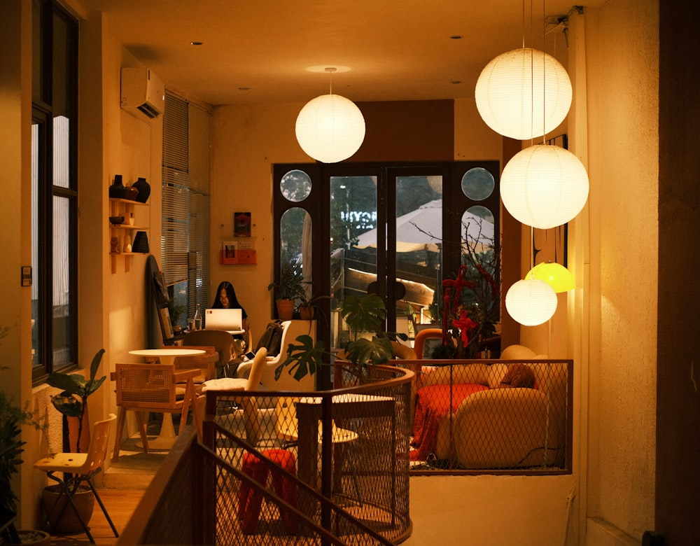
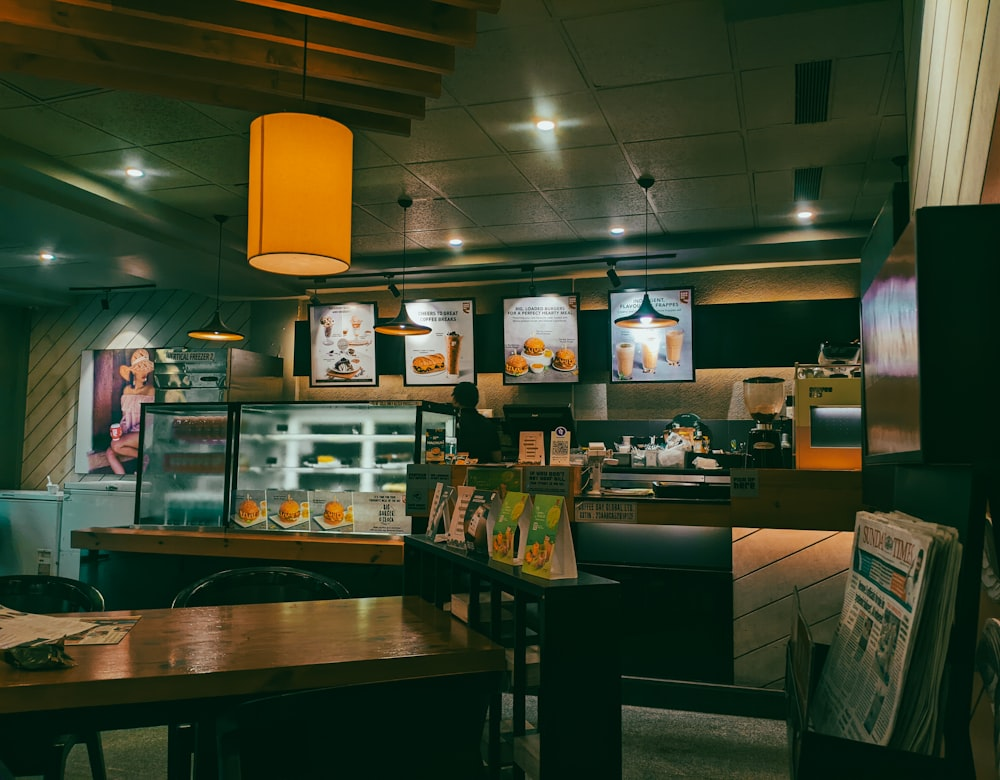
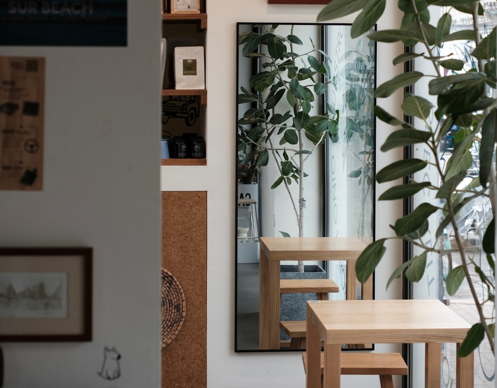
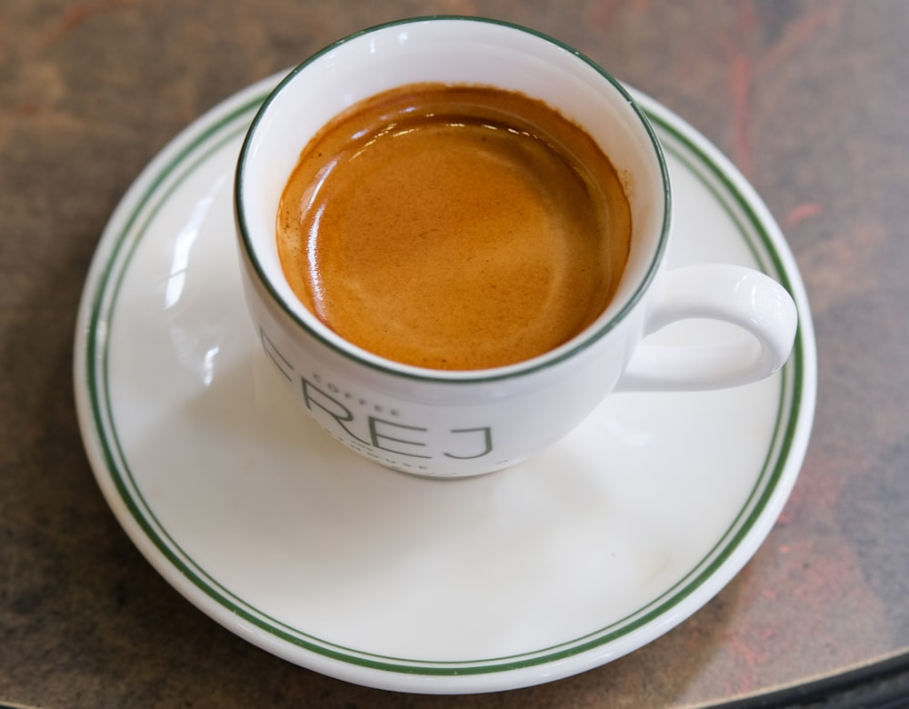

Сажа
Кофе, зерно и зал, где хочется задержаться
Обжариваем сами, варим на баре вручную и меняем лот на витрине каждую неделю. Столик у окна, книга, разговор — здесь никто не торопит.
Уже за столом? Заказ со стола →
Место
Один бар, живое зерно, свой обжарочный лист
Небольшая кофейня на Мельничной: варим на одном баре, обжариваем зерно партиями сами и держим лот на витрине неделю-две — дальше меняем на новый урожай. В зале — восемь столов, ламповый свет и негромкая музыка; для тех, кто спешит, на каждом столе QR — заказ уходит на бар с телефона, не отвлекая от разговора.
История места и команда →Зерно
Сегодня в зёрнах
Обжариваем сами небольшими партиями и держим на витрине один лот за раз — так проще следить за свежестью и рассказать, что в чашке.
Витрина
Что берёте
Три направления меню — нажмите на карточку, чтобы открыть список целиком.
Зал
Интерьер
Тёмное дерево, латунь и много света от окна на Мельничную — рассчитан и на быстрый кофе с собой, и на пару часов за столом.




-
Адрес
ул. Мельничная, 14
Калуга, вход со двора -
Часы
Пн–Пт 8:00–21:00
Сб–Вс 9:00–22:00 -
Связь
Вопросы, бронь стола
Telegram
Загляните на чашку
Столик у окна почти всегда свободен утром. Уже сидите за столом — откройте меню с телефона.